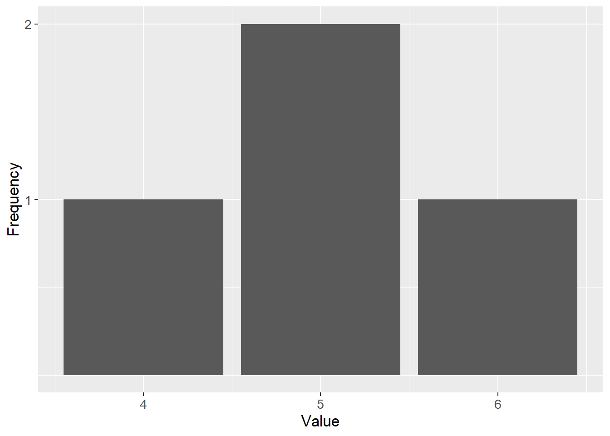
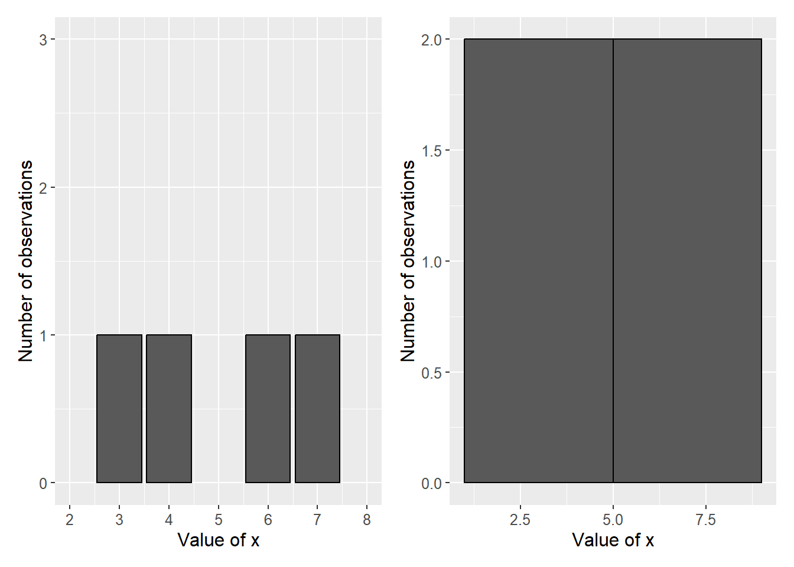
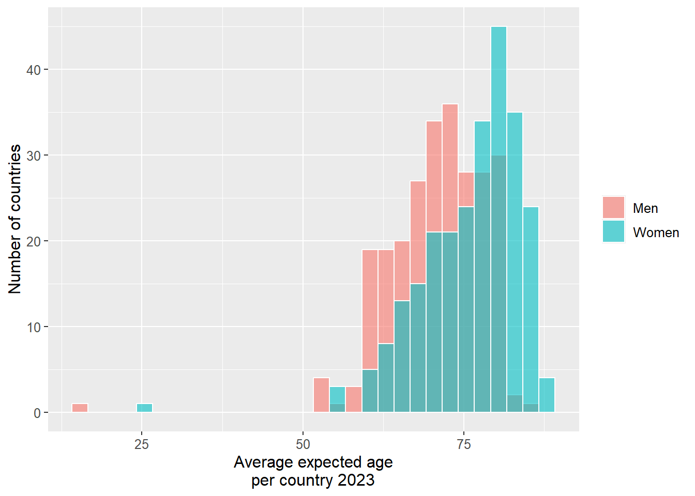
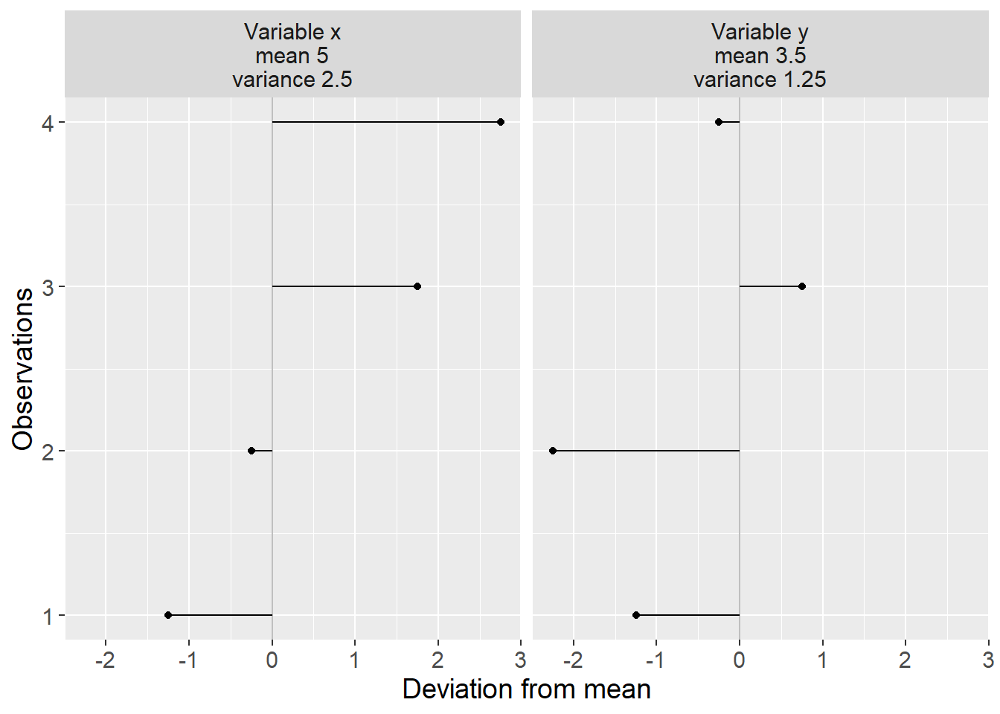

Chapter 15 Data and Descriptive Statistics
This chapter introduces fundamental concepts for analytical work: how we collect and organise data, how populations and samples relate to each other, and how to describe variation in data using basic statistical measures.
15.1 Population and Sample
A decisive question in analytical work is how we delimit our problem and how large a part of the world and world history we want to be able to make statements about. These phenomena can be described with the help of the concepts population, sample and superpopulation.
Population refers in statistics to the collection of units, observations, that we study. The population can consist of both a finite or an infinite amount of values. Examples of a finite population could be all cars in a city, all citizens in a country or all heart operations performed at a hospital. The population can also be infinite, for example if we conduct repeated equivalent experiments we can in theory do this an infinite number of times.
Sample is the observations we take from the population. Our hope is that the patterns we observe in the sample are the same patterns that are found in the entire population. The goal is therefore that the sample should be more or less representative of the population. Samples can be created in different ways, which is described a bit more thoroughly in section 15.4 . When we work with samples, which is normally the case within social science, there is always a certain risk and probability that our results are incorrect and could just as well have arisen by chance. In Part III we introduce how we can reason about and calculate probability and chance. Work with data under uncertainty is called statistical inference (statistical reasoning). To study causal relationships (causality) is sometimes called causal inference. The word inference means reasoning, to draw conclusions.
Superpopulation is the theoretical population that we hope to be able to make statements about beyond the study’s sample and population. Suppose we perform an analysis on a sample of observations that we take from a population. Often we want to be able to make statements both about the population that exists today and different conceivable populations that may exist in the future. In certain cases we perform analyses to be able to predict what will happen if something changes, that is, to be able to predict different conceivable outcomes. These hypothetical observations belong to what is called the superpopulation.
In section 4.7 we introduced set theory. If we imagine that we have a study where the population consists of a collection of observations that we number from 1 to N and each observation is called \(x_{i}\) where \(i=1,2,3,...,N\). The letter \(N\) symbolizes number of observations, regardless of whether it is a small or large value. It is central to remember here that when we study observations from our population there is for each observation \(x_{i}\) from the population, an observable version \(\left(x_{i}^{\text{observable}}\right)\) that we study, and a non-observable one that we will never see \(\left(x_{i}^{\text{non-observable}}\right)\). This applies to both the treatment and control groups.
Suppose we conduct a study regarding the effect of a medicine on patients with a certain disease, where the population is all patients with the disease. We collect all N observations from the population and divide these into treatment group (receives medicine) and control group (does not receive medicine). The observations in the treatment group we call \(x_{i,B}\) and those in the control group \(x_{i,K}\). Regardless of which group each observation belongs to, we work only with what we observe and each observation in each group will have a non-observable, counterfactual, version.
Sometimes it is difficult to exactly define what is a study’s exact population and superpopulation. If we study what effect a medicine has on patients’ disease symptoms, the population can for example consist of all patients in the entire world with this disease. From these patients we take a sample, for example 100 patients, which we divide into treatment and control groups. By studying this sample, our ambition is to estimate the covariation between medicine and symptoms in the population. We thereby want to be able to make statements about the effect the medicine has in the sample, which is an estimate of the effect the medicine has in the population. We thereby also try to estimate the effects of the medicine in the superpopulation, which in this case is all comparable patients that can be thought to come to exist in the future. Since people are different, it is not always so obvious how general our results are and how far-reaching conclusions are possible.
Suppose we instead are interested in what effect an education has on people’s future earnings. The population would in this case be able to be all persons who can be thought to participate in the education, for example all adult people in the ages 18 to 64 years. Or maybe we are only interested in people with certain specific prerequisites. Depending on what is the study’s purpose and ambition, it can affect how we define the population.
Even superpopulation can be difficult to define. Suppose we find that the education has a positive impact on the participants’ future earnings. If a large number of people studied the education, there would be masses of people with the same education. Then the education might not have the same effect compared to a situation where only a small proportion of the population had studied the education.
15.2 Information and variables
Within analytical work, information about reality is often called data. Data is just another word for information and can consist of anything that we can perceive with our senses, for example numbers, text, images, sound recordings. All analytical work uses information about reality in some form or extent. All data must in turn be interpreted. For example, much analytical work consists of mapping events: What happened where and when? Exactly what type of information is required for an analysis depends on what is the study’s purpose. To formulate the study’s purpose can sometimes require detailed deliberations.
Social scientific analysis uses information about reality in different ways. When we work with quantitative methods, for example studying how different phenomena vary, we often benefit from categorizing information in data variables. A data variable can contain any type of information, for example street numbers, names of children born in April, the gross national product for different countries or all individual words in a novel organized with one word per row. To use a data variable for calculations, this variable needs to consist of numbers or be rewritten into numbers.
When we define variables, it is important that all information that we collect into a variable has the same properties. If we for example collect information about inhabitants’ life expectancy and income, we should place this information in two different variables: one variable for life expectancy and one variable for income. If we mix information in a variable, for example life expectancy and income, it becomes impossible to do calculations on the variable. Within one and the same variable, data should use the same unit of measurement. We do not want to have one observation in centimeters and another in inches in the same column.
A common way to organize data is tables, where each column represents a variable and each row an observation. In the same way that we have clear categories for our variables in the columns, we need to have clear categories for our observations. Exactly what represents an observation depends on what the data describes. It can for example be one observation per individual or per country. Often we also need to delimit what time point an observation refers to, for example an observation can contain information about a person per week. The next row can in that case contain the next observation, for example information about the same person the week after. What the data observations describe is called unit of observation.
| Variable 1 \(\left(y\right)\) | Variable 2 \(\left(x\right)\) | Variable 3 \(\left(z\right)\) | |
|---|---|---|---|
| Observation 1 | \(y_{1}\) | \(x_{1}\) | \(z_{1}\) |
| Observation 2 | \(y_{2}\) | \(x_{2}\) | \(z_{2}\) |
| Observation 3 | \(y_{3}\) | \(x_{3}\) | \(z_{3}\) |
| Observation 4 | \(y_{4}\) | \(x_{4}\) | \(z_{4}\) |
Table 15.1 shows an example where we have three data variables and call these \(x\), \(y\) and z. We number the observations \(y_{1}\) to \(y_{4}\), \(x_{1}\) to \(x_{4}\) as well as \(z_{1}\) to \(z_{4}\). There are no rules for how variables should be named or numbered. It also occurs that variables are called by the same letter and distinguished through numbering, for example the variables \(x_{1}\), \(x_{2}\) and so on.
15.3 Different types of data
Data that is used for calculations is usually divided into different data types: ratio data, interval data, ordinal data and nominal data. One way to think about this is that we have a variable, \(x\), with some form of information about reality. The division is then based on the following criteria:
Ranking: Can the observations in \(x\) be ranked?
Equidistance: Is the distance between two values in \(x\) equally large?
Absolute zero point: Is the variable defined in such a way that there is a value that is the smallest conceivable?
Depending on the answers to these three questions, we may define our variable as one of the four data types. The three criteria and the four data types are summarized in table 15.2 .
| Ranking | Equidistance | Absolute zero point | |
|---|---|---|---|
| Nominal data | No | No | No |
| Ordinal data | Yes | No | No |
| Interval data | Yes | Yes | No |
| Ratio data | Yes | Yes | Yes |
Let us go through the four data types and give some examples. Nominal data is not ranked, has no clear distance between each scale step and no absolute zero point. Typical examples of this are categorical variables, for example languages, names of countries, gender. Since the information in this type of data mostly concerns grouping or categorizing, the possibility to use mathematical operations is limited to primarily defining whether an observation belongs or does not belong to one category or another.
Ordinal data has ranking but not equidistance or absolute zero point. A typical example is school grades, or placement in a list or queue, for example place 1, 2, 3 and so on. Another example can be survey responses where respondents are asked to rank alternatives from best to worst. In addition to categorizing, this data type can also use mathematical operations for inequality, for example that position 1 comes before position 2, which comes before position 3. It is thereby possible to calculate the median value for this type of data, but not for example the mean, see section 2.13 .
Interval data allows calculations of difference and addition and subtraction. However not ratios. We therefore cannot in a meaningful way compare the double value of interval data. Typical examples include temperatures in for example degrees Celsius. The difference between –2 and +3 degrees Celsius is the same as +5 and +10 degrees Celsius. But we cannot in the same way calculate these distances as ratios, since 0 degrees Celsius is just a marker for the temperature when water freezes.
Ratio data allows the same mathematical methods as the other three data types, including the calculations of ratios. This includes many common measures within physics and technology, such as for example length, time and mass. Unlike the other data types, it is possible to use division for ratio data and compare relative distances, such as that 10 meters is twice as long as 5 meters.
This division into four types of data is commonly occurring. Other more detailed divisions can also occur. To think about data in these forms can help us to sort information and see what possibilities and limitations that precisely our data offer. This should however primarily be seen as a tool, rather than a rule system.
15.4 Collecting a sample
To understand the idea behind sampling of data, we will in this section briefly go through some overarching examples of how this can happen. First the population must be defined. A popular method is to then take a simple random sample (SRS). As the name suggests, this is based on letting all observations in the population have the same theoretical possibility to be included in the sample. The probability for each individual observation must also be above 0. The observations that are to be included in the sample are chosen randomly, for example through lottery or with the help of a computer’s random generator. Say for example that we want to know what all of the adult inhabitants think about Jesus. We may then randomly sample 100 persons and ask them.
Another method is systematic sampling: we give each person a number. Instead of drawing numbers randomly, we select every 1,000th person. This also gives a random sample as long as the numbered list of the population does not contain any patterns.
There are several commonly occurring methods that are not random. One such method is quota sampling, or quota-based sampling. This method is based on that we know of some characteristics in the population that are important for the study. We therefore weight the sample based on these characteristics to create a sample that is more representative of the population. For example, we are interested in what the population of a country thinks about Jesus and think that the population’s proximity to the sea is important for explaining variations in faith. We estimate that 40% of the population lives near the sea and therefore control our sample so that 40% of the sample consists of residents in the vicinity of the sea. A problem with this method is that many factors affect people’s view of Jesus and if our sampling method is deficient, it risks worsening the result.
To be sure that different parts of the population are represented in our sample, we may use stratified sampling. The population is divided into different groups, strata. From each stratum, observations are chosen randomly. The number of observations does not need to be the same proportion in the sample as in the population, as long as we adjust our calculations for this. Suppose we want to investigate the views on Jesus among the population for a country. In our study we want to make sure that we get enough inhabitants from the northern inland of the country. By doing so we make sure that it is possible to make more precise statements about this specific group. In the northern inland lives about five percent of the population. If we randomly select observations from all people in the country, the risk is that we get a correct proportion of respondents from the northern inland, but these observations will at the same time be too few to make any more detailed observations about the people of the northern inland. For instance, how much does opinions differ among parents and children in the northern inland. To get more reliable results, one may collect extra many observations from a group that actually constitutes a smaller proportion of the full population of the country. When we then calculate on our data material, we must take into account the bias in the sample that we ourselves have created, so we do not risk getting an incorrect picture of the population.
Another method is cluster sampling, also called group sampling. The full population is divided into clusters, groups, and some of these clusters are selected randomly. Thereafter, random samples can be made from each group. For example, we are to ask the students at a school what they think about Jesus. The population is all students at the school. We divide the students into clusters depending on which school class they belong to. The school classes that are to be included in the study are chosen randomly.
Collecting information usually entails several challenges, such as how to best measure a phenomenon, whether the sources are reliable, whether our information can be verified or whether we succeed in interpreting it correctly. These are important aspects of analytical work but there is no room to go through them here.
15.5 Frequency Distribution
To study covariation between variables, observations must have different values; there must be variation within the variables. If we, for example, have ten observations for the variables \(x\) and \(y\) and all observations have the values \(\left(x,y\right)=\left(5,23\right)\), then there is no variation within variable \(x\) or \(y\). The variables therefore cannot covary either.
One way to study the spread of values is frequency distribution. Suppose we have the following four values: 4, 5, 5 and 6, where the number 5 occurs twice. One way to show the spread in a collection of values is a bar graph, a graph where the frequency of each respective value is reported with bars. Figure 15.1 shows the frequency distribution for the four values.
Now we have a variable \(x\) that has the following four values: 3, 4, 6 and 7. Figure 15.2 illustrates this variable in two different bar graphs. In the left graph this is illustrated with a bar of height 1 per value. The right graph shows a so-called histogram. A histogram is a form of bar graph where each bar represents an interval of values. In the graph to the right, the left bar represents the three values 3, 4 and 6. On the vertical y-axis, this bar therefore reaches up to the value 3, because the bar represents three observations. The right bar in the right graph we have one observation, which represents the value 7.

Figure 15.1: Frequency distribution for the values \(4,5,5,6\)

Figure 15.2: Two illustrations of a frequency distribution
Bar graphs and histograms are often used to describe the spread in data. Consider another example with more observations. Figure 15.3 shows a histogram that illustrates the distribution of average life expectancy for men and women in 290 countries and regions in the world, with one average value per gender and country/region. There are 290 observations for men and 290 observations for women. The horizontal x-axis shows the values for expected age, while the number of observations (countries or regions) is shown on the vertical y-axis.
In the graph we see that women on average live longer than men, since the bars for women are located more to the right in the graph. The bar furthest to the left and the right in the graph illustrates that there is a few places in the world where men and women, on average, tend to live shorter as well as longer lives, compared to the other places.

Figure 15.3: Average expected life in countries and regions in the world. Data from Our World In Data.
15.6 Measures of Central Tendency and Measures of Dispersion
For describing what constitutes an average value for a collection of values, we use what are called measures of central tendency. Two examples of measures of central tendency are mean (sum divided by number) and median (the middle value). We introduced both of these measures in section 2.13 . Another useful measure of central tendency is mode, which is the value that occurs most frequently. Consider the following fifteen numbers as an example:
| 1 | 1 | 1 | 4 | 5 | 6 | 6 | 6 | 7 | 8 | 8 | 9 | 9 | 9 | 9 |
|---|
For this collection of values, the mode = 9 since the number 9 occurs most frequently. The median for these numbers is the value 6 since it is the middle value. The mean is the sum divided by the number of values \(=89/15\approx5.93\).
To compare how the values are spread around the average value, we use different types of measures of dispersion. One way to get a picture of the spread in a collection of values is to calculate the range, the difference between the highest and lowest value. For the 15 numbers above, the range is \(9-1=8\). A useful measure of dispersion is percentiles, which are the values that divide a collection of values into 100 parts. Similarly, other divisions are also used, such as deciles, quintiles and quartiles. A decile divides a collection of values into ten parts, quintile into five and quartile into four.
Percentiles are indicated with corresponding numbers 1–100, where \(P_{10}\) symbolizes the tenth percentile and is the value that is greater than 10% of the values in the collection. Here we are content with a simplified example. Consider all the integers 0 to 1,000. The tenth percentile for this set is \(P_{10}=100\), since the value 100 delimits the bottom 10 percent of the values. The fourteenth percentile is \(P_{14}=140\). The twentieth percentile is \(P_{20}=200\), and so on.
Percentiles \(P_{10},\:P_{20},\:P_{30},\:P_{40},\:P_{50},\:P_{60},\:P_{70},\:P_{80}\) and \(P_{90}\) are the same values as the deciles. Deciles can be written as \(D_{1}\) for decile 1, which is the same value as \(P_{10}\), \(D_{2}\) for decile 2, and so on. Percentiles \(P_{20},\:P_{40},\:P_{60}\) and \(P_{80}\) are the same values as the quintiles, where \(P_{20}=K_{1}\) for quintile 1. Percentiles \(P_{25},\:P_{50}\) and \(P_{75}\) are the same values as the quartiles, which divide the collection into four parts. Quartiles are often written as \(Q_{1},\:Q_{2}\) and \(Q_{3}\). \(P_{50}=Q_{2}\) marks the middle value in the collection, which is the same thing as the median. Sometimes the concepts interquartile range and quartile deviation are used. Interquartile range is the difference between the third and first quartile: \(Q_{3}-Q_{1}\). Quartile deviation is interquartile range divided by 2: \(\left(Q_{3}-Q_{1}\right)/2\).
15.7 Variance and standard deviation
Two other common measures of dispersion are variance and standard deviation. Both of these are very central to all statistical analysis, which is why we go through them a bit more thoroughly here. In section 15.1 we introduced population and sample. When we work with information and data variables, for example data that describes some phenomenon in society, we very rarely have access to reliable information about the population. When we study causal relationships, we lack observations for the counterfactual scenario that we are actually interested in and therefore do not have access to all data. Instead, we are then referred to trying to estimate what the population looks like by studying the sample data we have access to.
Say now that we are interested in variable x. In the population for this variable there are N number of observations and from this population we take n number of observations for our sample. Our goal is to find out what the spread in the population looks like and we use our sample data to study this. Note here that what we are actually constantly seeking are the values that exist in the population. We make calculations on our sample data to estimate the values in the population. The expressions estimate and estimate mean the same thing.
If we have access to population data, the mean is known. To mark this, the population’s mean is usually written as \(\mu_{x}\)(the Greek letter mu). The mean \(\bar{x}\) is an estimate of the population’s \(\mu_{x}\), where \(\bar{x}=\sum_{i}x_{i}/n\).
To study spread, we calculate distance from the mean. In the population, the difference between observation \(x_{i}\) and the mean \(\mu_{x}\) is written as \(x_{i}-\mu_{x}\), where letter \(i\) means observation number \(i\). With our sample data we take \(x_{i}-\bar{x}\). The sum of differences from the mean \(\sum_{i}\left(x_{i}-\bar{x}\right)\) is always 0, which we see by writing:
\[ \begin{align} \sum\left(x_{i}-\bar{x}\right) & =\sum x_{i}-n\bar{x} \tag{15.1}\\ & =\sum x_{i}-n\frac{1}{n}\sum x_{i}\nonumber \\ & =\sum x_{i}-\sum x_{i}\nonumber \\ & =0\nonumber \end{align} \]
One way to measure deviations from the mean is to estimate mean absolute deviation:
\[ \begin{equation} \textbf{Mean absolute deviation} =\frac{1}{n}\sum\left|x_{i}-\bar{x}\right| \end{equation} \]
We can also replace the mean \(\bar{x}\) with some other measure of central tendency such as median or mode. Another way to sum deviations from the mean to a positive value is to square the deviations: \(\left(x_{i}-\bar{x}\right)^{2}\). If we divide the sum of the squared differences by the number of observations n, we get the variance for variable \(x\):
\[ \begin{align} \textbf{Variance: }\text{var}\left(x\right) & =\left(\frac{1}{n}\right)\sum_{i}^{n}\left(x_{i}-\bar{x}\right)^{2} \tag{15.2} \end{align} \]
where the parenthesis \(\left(x_{i}-\bar{x}\right)^{2}\) shall be calculated for each observation and summed:
\[ \begin{equation} \sum_{i}^{n}\left(x_{i}-\bar{x}\right)^{2}=\left(x_{1}-\bar{x}\right)^{2}+\left(x_{2}-\bar{x}\right)^{2}+...+\left(x_{n}-\bar{x}\right)^{2} \end{equation} \]
By squaring each deviation from the mean we get a positive measure. This also means that greater deviations from the mean will have a greater weight for the estimated variance.
In the same way that the mean \(\bar{x}\) is an estimate of the population’s \(\mu_{x}\), \(\text{var}\left(x\right)\) is an estimate of the variance in the population. The variance in the population is often denoted with the Greek letter small sigma squared, \(\sigma_{x}^{2}\), which indicates that this is the population value for variable \(x\).
Standard deviation for a collection of observations is the positive square root of the variance. For population, standard deviation is often denoted \(\sigma_{x}\). Estimated standard deviation for variable \(x\) can be written \(\hat{\sigma}_{x}\), \(sd_{x}\) or \(s_{x}\):
\[ \begin{align} \textbf{Standard deviation: } & s_{x}=+\sqrt{\text{var}\left(x\right)}=\left(\frac{\sum_{i}^{n}\left(x_{i}-\bar{x}\right)^{2}}{n}\right)^{1/2} \end{align} \]
When we estimate the mean with sample data \(\left(\bar{x}\right)\), this often deviates from the population’s mean \(\left(\mu_{x}\right)\). This deviation tends to lead to our estimate of the population’s variance becoming too small. To correct for this, in the equation for variance (equation (15.2) ) we divide by \(n-1\) instead of \(n\). This new definition of variance is called corrected variance or sample variance:
\[ \begin{equation} \textbf{Sample variance: }\text{var}\left(x\right)=\left(\frac{1}{n-1}\right)\sum_{i}^{n}\left(x_{i}-\bar{x}\right)^{2} \tag{15.3} \end{equation} \]
Division by \(n-1\) is called Bessel’s correction and often results in the estimated variance being closer to the population’s variance. Many computer programs have ready commands for estimating (calculating) variance and then use Bessel’s correction as in equation (15.3) . For standard deviation we also use Bessel’s correction:
\[ \begin{align} \textbf{Sample standard deviation: }s_{x} & =\left(\frac{\sum_{i}^{n}\left(x_{i}-\bar{x}\right)^{2}}{n-1}\right)^{1/2} \end{align} \]
If we have a constant a that represents an arbitrary value, the variance for this is \(\text{var}\left(a\right)=0\). This is because a single value has no spread. If \(a\) is multiplied by a variable \(x\), the variance for \(ax\) equals \(a^{2}\text{var}\left(x\right)\). We see this by taking:
\[ \begin{align} \text{var}\left(ax\right) & =\left(\frac{1}{n}\right)\sum_{i}\left(ax_{i}-a\bar{x}\right)^{2}\\ & =\left(\frac{1}{n}\right)\sum_{i}\left(a^{2}x_{i}^{2}-2a^{2}\bar{x}+a^{2}\bar{x}^{2}\right)\nonumber \end{align} \]
Since \(a\) is not affected by the summation, we factor out all \(a^{2}\):
\[ \begin{equation} \begin{aligned} \text{var}\left(ax\right) & =a^{2}\left(\frac{1}{n}\right)\sum\left(x_{i}^{2}-2\bar{x}+\bar{x}^{2}\right)\\ & =a^{2}\left(\frac{1}{n}\right)\sum\left(x_{i}-\bar{x}\right)^{2}\\ & =a^{2}\text{var}\left(x\right) \end{aligned} \tag{15.4} \end{equation} \]
For standard deviation we get:
\[ \begin{align} s_{x}\left(ax\right) & =\left(\frac{1}{n}\sum_{i}^{n}\left(ax_{i}-a\bar{x}\right)^{2}\right)^{1/2}\\ & =\left(\frac{1}{n}\sum_{i}^{n}\left(a^{2}x_{i}^{2}-2a^{2}\bar{x}+a^{2}\bar{x}^{2}\right)\right)^{1/2}\nonumber \\ & =\left(a^{2}\right)^{1/2}\left(\frac{1}{n}\sum_{i}^{n}\left(x_{i}-\bar{x}\right)^{2}\right)^{1/2}\nonumber \\ & =\left|a\right|s_{x}\nonumber \end{align} \]
| Observation | \(x_{i}\) | \(y_{i}\) | \(x_{i}-\bar{x}\) | \(y_{i}-\bar{y}\) | \(\left(x_{i}-\bar{x}\right)^{2}\) | \(\left(y_{i}-\bar{y}\right)^{2}\) |
|---|---|---|---|---|---|---|
| 1 | 3 | 3 | \(-2\) | \(-0,5\) | 4 | 0,25 |
| 2 | 4 | 2 | \(-1\) | \(-1,5\) | 1 | 2,25 |
| 3 | 6 | 5 | 1 | 1,5 | 1 | 2,25 |
| 4 | 7 | 4 | 2 | 0,5 | 4 | 0,25 |
| Mean | 5 | 3,5 | ||||
| Sum | 20 | 14 | 10 | 5 |

Figure 15.4: Variance for variables \(x\) and \(y\)
where \(\left|a\right|\) is the absolute value of the constant a. Now we shall calculate (estimate) the variance with four observations for two variables: \(x\) and \(y\). Variable \(x\) has the values 3, 4, 6 and 7. Variable y has the values 3, 2, 5 and 4. Table 15.3 summarizes the calculations we need. We use the definition of variance from equation (15.3) :
\[ \begin{equation} \begin{aligned} \text{var}\left(x\right) & =\frac{\sum_{i}\left(x_{i}-\bar{x}\right)^{2}}{n-1}=\frac{10}{3}\\ \text{var}\left(y\right) & =\frac{\sum_{i}\left(y_{i}-\bar{y}\right)^{2}}{n-1}=\frac{5}{3} \end{aligned} \tag{15.5} \end{equation} \]
The variance for variable \(x\) is larger than the variance in variable \(y\). This indicates that the values in \(x\) are more spread out from the mean compared to the spread in variable \(y\). Figure 15.4 illustrates deviations from the mean for each respective variable. In the heading for each respective graph, mean and variance are reported. To calculate standard deviation for variables \(x\) and \(y\), we take the positive square root of the variance:
\[ \begin{equation} \begin{aligned} s_{x}= & \sqrt{\frac{\sum_{i}^{n}\left(x_{i}-\bar{x}\right)^{2}}{n-1}}=+\sqrt{\frac{10}{3}}\approx10.05\\ s_{y}= & +\sqrt{\frac{5}{3}}\approx0.745 \end{aligned} \tag{15.6} \end{equation} \]
We summarize some of the measures of central tendency and measures of dispersion with the two tables below. In the upper table, a collection of values is presented. In the lower table 15.4, these are described with measures of central tendency and measures of dispersion.
| \(x_{i}\) | 12 | 27 | 35 | 38 | 53 | 53 | 55 | 57 | 66 | 69 | 74 | 89 | 98 |
|---|---|---|---|---|---|---|---|---|---|---|---|---|---|
| \(i\) | 1 | 2 | 3 | 4 | 5 | 6 | 7 | 8 | 9 | 10 | 11 | 12 | 13 |
| Measure | Description | Result |
|---|---|---|
| Mean | Sum divided by number | 55.8 |
| Median | Middle value | 55 |
| Mode | Most frequently occurring | 53 |
| Quartiles | Divides the distribution into four parts | \(Q_{1}=38\), \(Q_{3}=69\) |
| Percentiles | Divides the distribution into parts | \(P_{20}=36.2\), \(P_{80}=72\) |
| Variance | Measures spread among values | 539.1 |
| Standard deviation | Positive square root of the variance | 23.2 |
| Minimum | Smallest value | 12 |
| Maximum | Greatest value | 98 |
15.8 Standardized values
It is difficult to compare variance between two different variables if the variables are measured in different units, for example, such as weight and height. One method to facilitate comparisons between variables is standardization and normalization. Standardized values for a variable x are a measure of how far a value \(\left(x_{i}\right)\) in a variable is from the variable’s mean \(\left(\bar{x}\right)\) counted in number of standard deviations. This is a very useful measure that is often used in statistics. Standardized values are also called standard scores, z-scores or z-values. Standardized values for a variable x can be calculated in the following way:
\[ \begin{equation} \textbf{Standardized value: }x_{i}=z_{i}=\frac{x_{i}-\bar{x}}{s_{x}} \tag{15.7} \end{equation} \]
where \(x_{i}\) is each respective value in variable \(x\) and \(z_{i}\) is the standardized value of \(x_{i}\). \(\bar{x}\) is the mean for \(x\) and \(s_{x}\) is the standard deviation for variable \(x\). Each observation’s distance to the mean is divided by the standard deviation for the current variable. Standardized variables always get the mean 0 and standard deviation 1.
If we take our variables \(x\) and \(y\) that we used as examples in the previous section and convert these to standardized values, we get the two new variables \(z_{x}\) and \(z_{y}\). Calculations and results are reported in table 15.5 . Observations 1 and 2 for \(z_{x}\) and \(z_{y}\) become negative since these values lie below their respective means.
| Observation | \(x_{i}\) | \(y_{i}\) | \(z_{x}=\left(x_{i}-\bar{x}\right)/s_{x}\) | \(z_{y}\) |
|---|---|---|---|---|
| 1 | 3 | 3 | \(-1.1\) | \(-0.39\) |
| 2 | 4 | 2 | \(-0.55\) | \(-1.16\) |
| 3 | 6 | 5 | \(0.55\) | 1.16 |
| 4 | 7 | 4 | 1.1 | 0.39 |
| Mean, \(\bar{x}\) and \(\bar{y}\) | 5 | 3.5 | 0 | 0 |
| Standard deviation, \(s\) | 1.83 | 1.29 | 1 | 1 |
Normalization can mean slightly different things in statistics. One meaning is to convert a variable so that all values become between 0 and 1. Normalization of a variable \(x\) is done in the following way:
\[ \begin{equation} \textbf{Normalized value: }x_{norm}=\frac{x_{i}-x_{min}}{x_{max}-x_{min}} \tag{15.8} \end{equation} \]
where \(x_{i}\) is observation i for variable \(x\), \(x_{min}\) is the lowest value in variable \(x\) and \(x_{max}\) is the highest value for the variable. Similar to standardization, this can also be used to compare variables that otherwise differ from each other. Table 15.6 shows normalized values for variables \(x\) and \(y\).
| \(x_{i}\) | \(y_{i}\) | \(x_{norm}\) | \(y_{norm}\) | |
|---|---|---|---|---|
| 1 | 3 | 3 | 0 | 0.33 |
| 2 | 4 | 2 | 0.25 | 0 |
| 3 | 6 | 5 | 0.75 | 1 |
| 4 | 7 | 4 | 1 | 0.67 |
| Min. | 3 | 2 | 0 | 0 |
| Max. | 7 | 5 | 1 | 1 |
15.9 How do we know the things we know?
We described above the concepts superpopulation, population and sample. Since we cannot observe the counterfactual outcome that we are interested in when we study causal relationships, it can be described as us in these situations always working with a sample of data. When we work with samples, there is always more or less uncertainty to what extent we succeed in finding the values we seek for our population and superpopulation.
Even in situations where we actually have access to data for our entire population, there are reasons to regard the information as uncertain, that is, that there is a greater or smaller probability that our results are incorrect. Say for example that we study the economic development in Europe’s countries in recent decades. We have gotten hold of a table with data where we have a collection of variables with one observation per year and country. Even if our data contains information about all countries over a long time period, this should be regarded as a sample. Collection of data can entail measurement errors, for example due to technical aids or human mistakes. Or perhaps the data we use does not measure exactly what we want to study, but is an approximate measure of something more complex.
Another reason to treat most information as sample data is that there can be uncertainty around exactly how the population should be defined. We might want to be able to make statements about all patients of a certain age or all adult people in the entire country. Then it is usually a bit uncertain exactly what characteristics our population has. We can also think about these questions in terms of the superpopulation that will exist in the future. Even for these coming observations, there is uncertainty around their exact characteristics.
In the next chapters we will introduce how we can work more carefully and in detail with uncertainty and probability.